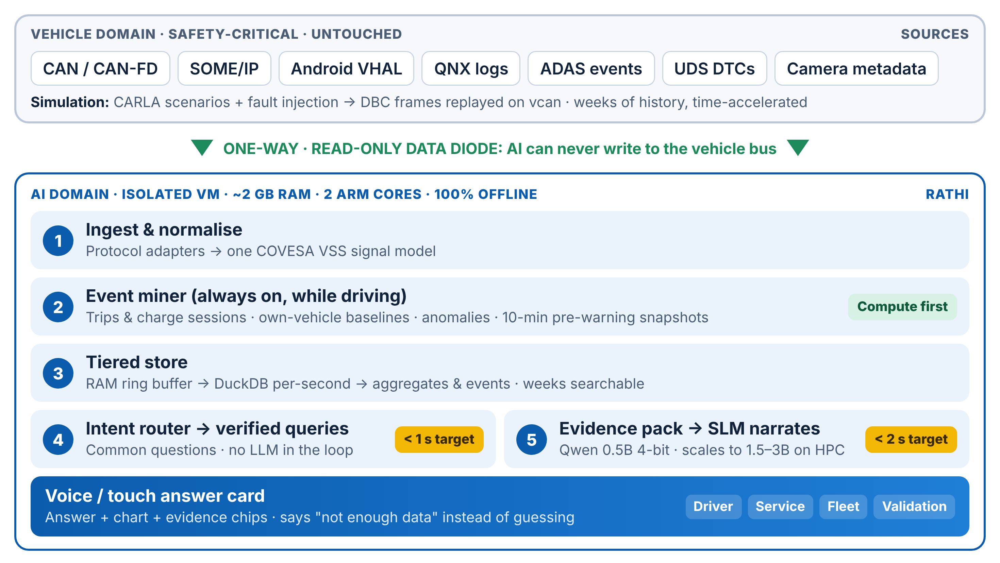

Self-scoring benchmark
Faults are injected into the simulation, so the correct answer to each question is known in advance. The benchmark asks every question and checks the answer against that ground truth, never against the assistant's own analytics.
Compute first, talk later

- Collect: CAN/CAN-FD, SOME/IP, Android VHAL, QNX logs, ADAS events and DTCs are normalised to the COVESA VSS model through a one-way, read-only path.
- Pre-compute: an always-on event miner segments trips, learns this vehicle's own baselines, flags anomalies and keeps snapshots before every warning.
- Retrieve: an intent router sends common questions to verified queries with no LLM in the loop.
- Explain: for "why" questions, a small model narrates a compact evidence pack. Accuracy comes from the analytics, not model size.
- Never guess: every answer shows its evidence and confidence; when data is missing, Rathi says so.
- Any powertrain: the pipeline is the same for electric, petrol, diesel and hybrid cars. A vehicle profile maps each car's signals (battery or engine coolant temperature, Wh/km or L/100 km) onto VSS, so the router, analytics and answers need no changes.
This preview vs the on-device build
| Part | Web preview (now) | On-device build (in progress) |
|---|---|---|
| Data | Seeded simulation in the browser | CARLA + fault injection replayed on virtual CAN |
| Storage | In-memory | RAM ring buffer → DuckDB → aggregates |
| Router + analytics | Same logic, in JavaScript | Python service |
| Narration | Templates over the evidence pack | Qwen 0.5B, 4-bit, llama.cpp |
| Hardware | Your browser | Raspberry Pi 5 / ARM VM, 2 GB RAM, 2 cores |